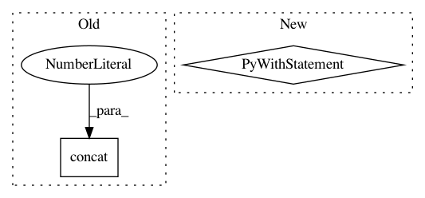

6ed4767b321be60ba8329b5356db73004a3d3b75,tensorforce/core/estimators/estimator.py,Estimator,tf_reset,#Estimator#Any#,89
Before Change
horizon_end = tf.where(condition=(num_values <= horizon), x=zero, y=(num_values - horizon))
horizon_estimate = horizon_estimate[:horizon_end]
else:
rewards = tf.concat(values=(values["reward"], terminal_zeros), axis=0)
// Expand missing estimates with zeros
terminal_size = tf.minimum(x=horizon, y=num_values)
terminal_estimate = tf.zeros(
After Change
)
else:
with tf.control_dependencies(control_inputs=(assertion,)):
last_reward = tf.where(
condition=tf.math.greater(x=values["terminal"][-1], y=one),
x=horizon_estimate[-1], y=values["reward"][-1]
)
rewards = tf.concat(
values=(values["reward"][:-1], (last_reward,), terminal_zeros), axis=0
)
// Remove last if necessary
horizon_end = tf.where(
condition=tf.math.less_equal(x=num_values, y=horizon), x=zero,
y=(num_values - horizon)
)
In pattern: SUPERPATTERN
Frequency: 3
Non-data size: 2
Instances
Project Name: reinforceio/tensorforce
Commit Name: 6ed4767b321be60ba8329b5356db73004a3d3b75
Time: 2019-08-31
Author: alexkuhnle@t-online.de
File Name: tensorforce/core/estimators/estimator.py
Class Name: Estimator
Method Name: tf_reset
Project Name: tensorflow/benchmarks
Commit Name: c48128868e7edcbf354ff79fa29fa0b79740b2f4
Time: 2018-07-18
Author: reedwm@google.com
File Name: scripts/tf_cnn_benchmarks/benchmark_cnn.py
Class Name: BenchmarkCNN
Method Name: _build_fetches
Project Name: tensorflow/ranking
Commit Name: 27aef1f3aa3dff22df125ca8a2fa4a4447ac6234
Time: 2019-08-13
Author: xuanhui@google.com
File Name: tensorflow_ranking/python/utils.py
Class Name:
Method Name: organize_valid_indices